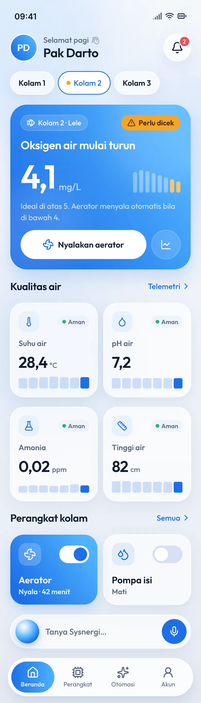
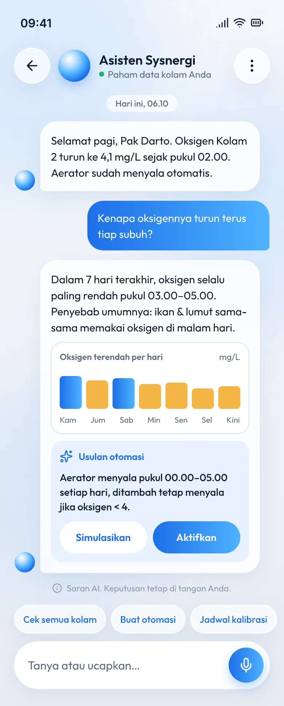
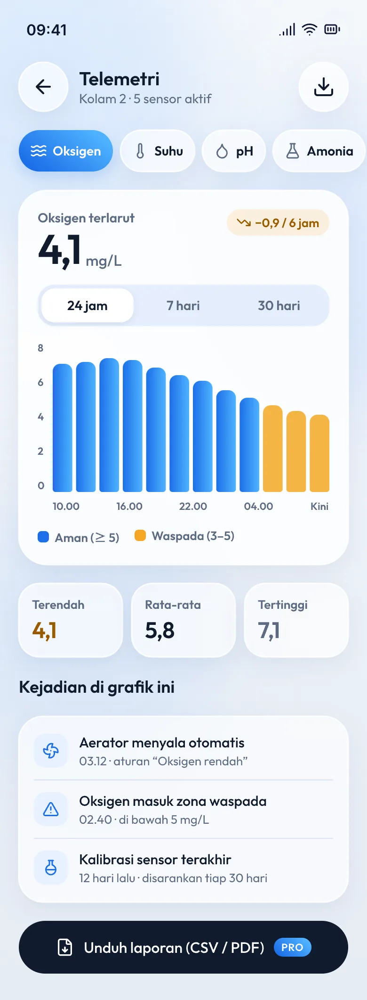
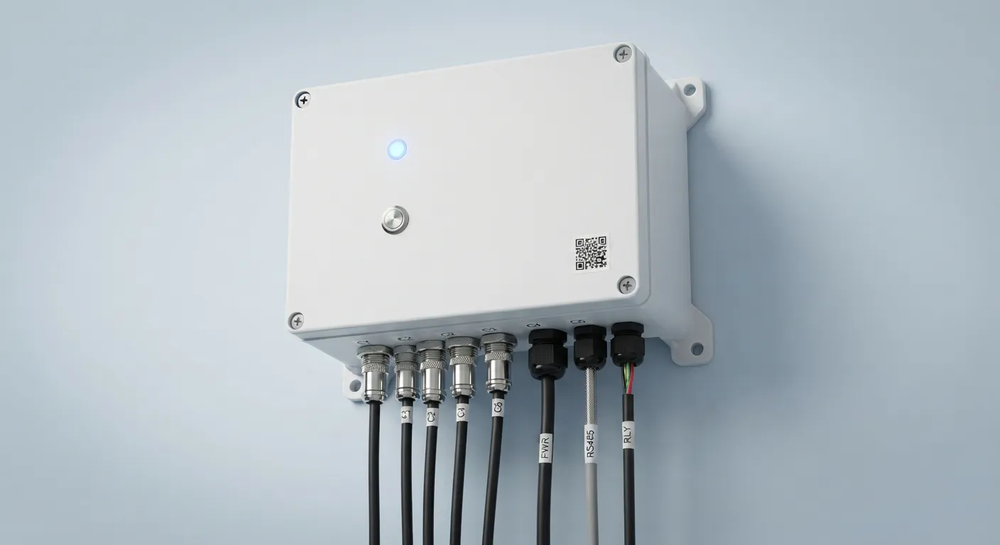
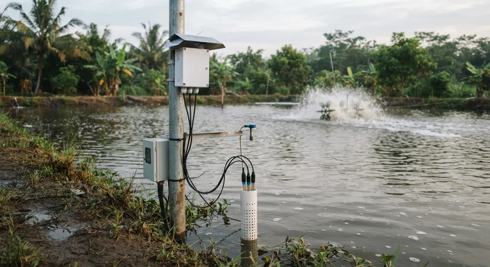
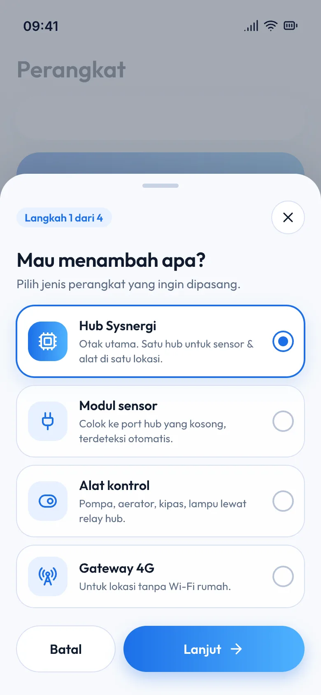
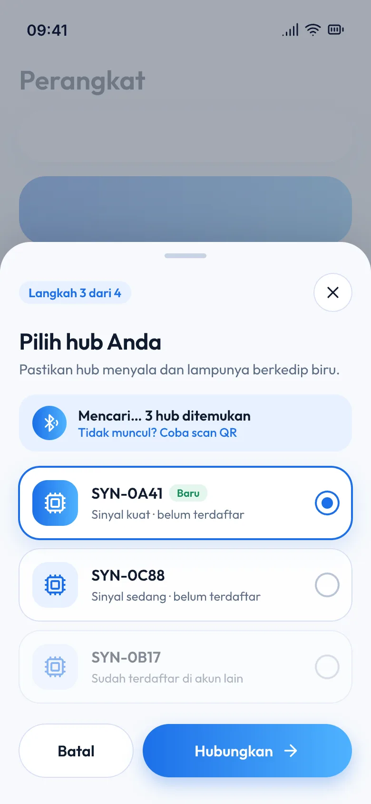
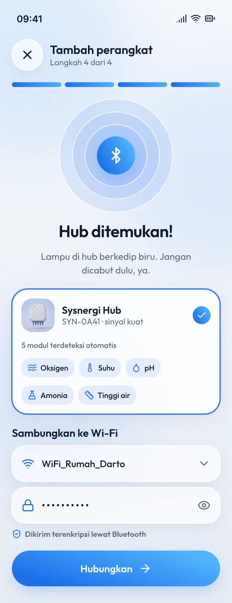
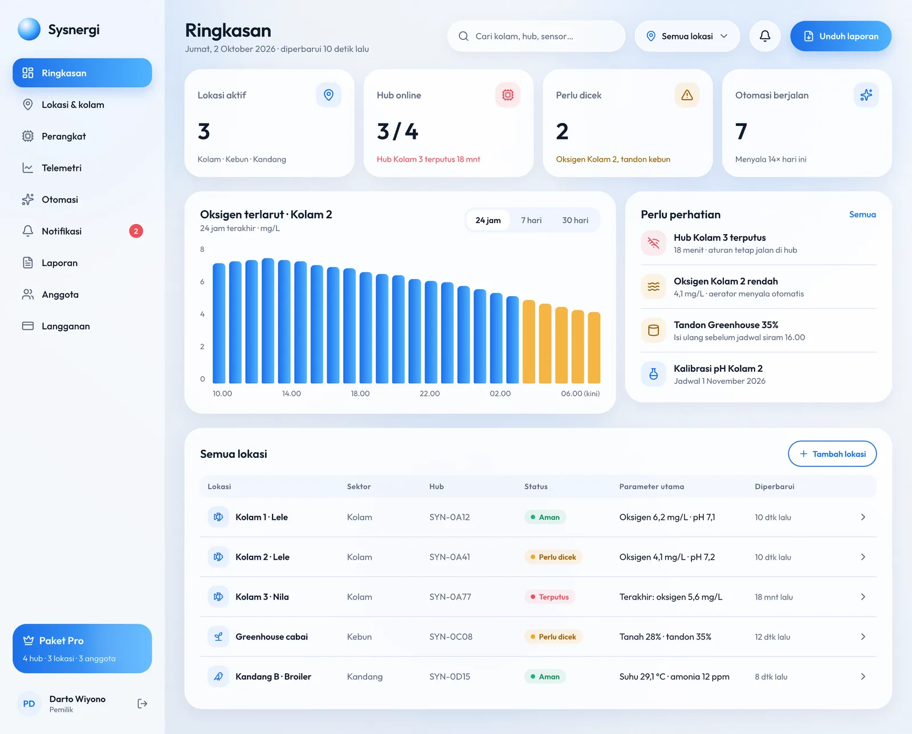

<title>Sysnergi</title>
<meta name="description" content="Sysnergi watches water quality in your pond, field, barn and home, and switches equipment on by itself when a reading turns dangerous.">
<link rel="preconnect" href="https://fonts.googleapis.com">
<link rel="preconnect" href="https://fonts.gstatic.com" crossorigin>
<link rel="stylesheet" href="https://fonts.googleapis.com/css2?family=Outfit:wght@400;500;600;700&family=Plus+Jakarta+Sans:wght@400;500;600&family=JetBrains+Mono:wght@500&display=swap">
<style>
/* Layout: the app as the stage. Hero = a live phone you can switch per operation,
   then one night at the pond (oxygen chart), the physical hub, Home (v4), pricing, waitlist. */
:root{
  --bg:#EEF2F7;          /* p-bg */
  --bg-glow:#DCE8FB;
  --surface:#FFFFFF;
  --surface-2:#F5F8FC;
  --line:#D8E0F5;        /* g-line */
  --ink:#0F1B2D;         /* p-ink */
  --ink-2:#5B6B82;       /* p-ink-2 */
  --blue:#1C6FE8;        /* p-blue */
  --blue-2:#4FB3FF;      /* p-blue-2 */
  --tint:#E8F1FF;        /* p-tint */
  --on-blue:#FFFFFF;
  --good:#10B39A;        /* g-teal */
  --good-soft:#DDF6F1;
  --warn:#F5A524;        /* g-amber */
  --warn-ink:#9A5B00;
  --danger:#EF4E5A;
  --violet:#7B5CFF;
  --pink:#F472D0;
  --orange:#FF7A45;
  --shadow:0 20px 50px -24px rgba(28,111,232,.35);
  --shadow-soft:0 10px 30px -18px rgba(15,27,45,.25);

  --f-display:"Outfit",ui-rounded,system-ui,sans-serif;
  --f-body:"Plus Jakarta Sans",system-ui,-apple-system,"Segoe UI",sans-serif;
  --f-mono:"JetBrains Mono",ui-monospace,SFMono-Regular,Menlo,monospace;

  --r-xl:32px; --r-lg:24px; --r-md:16px; --r-pill:999px;
  --wrap:1180px;
}
@media (prefers-color-scheme: dark){
  :root:not([data-theme="light"]){
    --bg:#0A1220; --bg-glow:#11264A; --surface:#121C2E; --surface-2:#18243A; --line:#24324D;
    --ink:#E9F0FA; --ink-2:#9AA8BF; --blue:#4F95FF; --blue-2:#7CC6FF; --tint:#16294A;
    --good:#3DD6BC; --good-soft:#0F332E; --warn:#F7B547; --warn-ink:#F7C46A;
    --shadow:0 20px 50px -24px rgba(0,0,0,.7); --shadow-soft:0 10px 30px -18px rgba(0,0,0,.6);
    color-scheme:dark;
  }
}
:root[data-theme="dark"]{
  --bg:#0A1220; --bg-glow:#11264A; --surface:#121C2E; --surface-2:#18243A; --line:#24324D;
  --ink:#E9F0FA; --ink-2:#9AA8BF; --blue:#4F95FF; --blue-2:#7CC6FF; --tint:#16294A;
  --good:#3DD6BC; --good-soft:#0F332E; --warn:#F7B547; --warn-ink:#F7C46A;
  --shadow:0 20px 50px -24px rgba(0,0,0,.7); --shadow-soft:0 10px 30px -18px rgba(0,0,0,.6);
  color-scheme:dark;
}

*{box-sizing:border-box}
[hidden]{display:none!important}
html{scroll-behavior:smooth}
section[id]{scroll-margin-top:96px}
@media (prefers-reduced-motion: reduce){html{scroll-behavior:auto}*{animation:none!important;transition:none!important}}
body{
  margin:0;background:var(--bg);color:var(--ink);
  font:400 16px/1.6 var(--f-body);
  background-image:radial-gradient(1200px 600px at 85% -10%,var(--bg-glow),transparent 60%),
                   radial-gradient(900px 500px at -10% 30%,var(--bg-glow),transparent 60%);
  background-repeat:no-repeat;
  -webkit-font-smoothing:antialiased;
}
a{color:inherit}
img{max-width:100%;display:block}
:focus-visible{outline:3px solid var(--blue-2);outline-offset:3px;border-radius:8px}
.wrap{max-width:var(--wrap);margin-inline:auto;padding-inline:20px}
h1,h2,h3{font-family:var(--f-display);font-weight:600;letter-spacing:-.02em;line-height:1.08;margin:0;text-wrap:balance}
h1{font-size:clamp(2.6rem,6vw,4.6rem)}
h2{font-size:clamp(2rem,4vw,3.1rem)}
h3{font-size:1.3rem;letter-spacing:-.01em}
p{margin:0}
.lead{font-size:1.125rem;color:var(--ink-2);max-width:56ch}
.eyebrow{font:500 .78rem/1 var(--f-mono);letter-spacing:.08em;text-transform:uppercase;color:var(--blue)}
.num{font-family:var(--f-display);font-variant-numeric:tabular-nums}

/* buttons */
.btn{display:inline-flex;align-items:center;gap:10px;font:600 1rem/1 var(--f-display);text-decoration:none;
  padding:16px 26px;border-radius:var(--r-pill);border:0;cursor:pointer;transition:transform .2s,box-shadow .2s}
.btn-primary{color:var(--on-blue);background:linear-gradient(100deg,#1C6FE8,#4FB3FF);box-shadow:0 14px 30px -12px rgba(28,111,232,.6)}
.btn-primary:hover{transform:translateY(-2px);box-shadow:0 18px 36px -12px rgba(28,111,232,.7)}
.btn-ghost{color:var(--ink);background:var(--surface);box-shadow:var(--shadow-soft)}
.btn-ghost:hover{transform:translateY(-2px)}

/* nav */
.nav{position:sticky;top:env(safe-area-inset-top,0px);z-index:20;padding-top:14px}
.nav-in{display:flex;align-items:center;justify-content:space-between;gap:16px;
  background:color-mix(in srgb,var(--surface) 78%,transparent);backdrop-filter:blur(16px);-webkit-backdrop-filter:blur(16px);
  border:1px solid color-mix(in srgb,var(--line) 70%,transparent);border-radius:var(--r-pill);padding:10px 10px 10px 18px;box-shadow:var(--shadow-soft)}
.brand{display:flex;align-items:center;gap:10px;font:700 1.25rem/1 var(--f-display);text-decoration:none;letter-spacing:-.02em}
.orb{width:30px;height:30px;border-radius:50%;flex:none;
  background:radial-gradient(circle at 34% 28%,#fff 0 8%,#9FD3FF 22%,#3E8BF5 55%,#1556C9 100%);
  box-shadow:0 6px 16px -4px rgba(28,111,232,.6)}
.nav-links{display:flex;gap:4px}
.nav-links a{text-decoration:none;color:var(--ink-2);font:500 .95rem/1 var(--f-display);padding:10px 14px;border-radius:var(--r-pill)}
.nav-links a:hover{color:var(--ink);background:var(--tint)}
.nav .btn{padding:12px 20px}
@media (max-width:860px){.nav-links{display:none}}

/* hero */
.hero{padding-block:56px 40px}
.hero-grid{display:grid;grid-template-columns:1.05fr .95fr;gap:48px;align-items:center}
.hero-copy{display:flex;flex-direction:column;gap:24px;min-width:0}
.hero h1 em{font-style:normal;background:linear-gradient(100deg,#1C6FE8,#4FB3FF);-webkit-background-clip:text;background-clip:text;color:transparent}
.cta-row{display:flex;flex-wrap:wrap;gap:12px}
.proof{display:flex;flex-wrap:wrap;gap:8px 18px;color:var(--ink-2);font-size:.92rem}
.proof span{display:inline-flex;align-items:center;gap:8px}
.proof svg{color:var(--good)}

.seg{display:inline-flex;flex-wrap:wrap;gap:4px;padding:5px;background:var(--surface);border-radius:var(--r-pill);box-shadow:var(--shadow-soft);border:1px solid var(--line)}
.seg button{font:500 .95rem/1 var(--f-display);color:var(--ink-2);background:transparent;border:0;border-radius:var(--r-pill);
  padding:11px 16px;cursor:pointer;display:inline-flex;align-items:center;gap:8px;transition:background .2s,color .2s}
.seg button[aria-selected="true"]{background:var(--tint);color:var(--blue)}
.seg button:hover{color:var(--ink)}
.seg-label{font-size:.85rem;color:var(--ink-2)}

.stage{position:relative;display:flex;justify-content:center;padding-block:10px 30px}
.phone{position:relative;width:min(330px,78vw);aspect-ratio:390/844;border-radius:46px;padding:10px;
  background:linear-gradient(160deg,#25324A,#0E1626);box-shadow:0 40px 80px -30px rgba(15,27,45,.55),inset 0 0 0 2px rgba(255,255,255,.08)}
.phone-screen{width:100%;height:100%;border-radius:37px;overflow:hidden;background:#EEF2F7}
.phone-screen img{width:100%;height:100%;object-fit:cover;object-position:top;transition:opacity .35s}
.float{position:absolute;background:color-mix(in srgb,var(--surface) 88%,transparent);backdrop-filter:blur(14px);-webkit-backdrop-filter:blur(14px);
  border:1px solid var(--line);border-radius:22px;box-shadow:var(--shadow);padding:14px 16px;display:flex;gap:12px;align-items:center;max-width:250px}
.float-a{left:-8px;bottom:110px;animation:bob 6s ease-in-out infinite}
.float-b{right:-14px;top:70px;animation:bob 6s ease-in-out -3s infinite}
.float .ic{width:40px;height:40px;border-radius:14px;display:grid;place-items:center;flex:none}
.float b{display:block;font:600 .95rem/1.2 var(--f-display)}
.float small{display:block;color:var(--ink-2);font-size:.8rem;line-height:1.35}
@keyframes bob{50%{transform:translateY(-8px)}}
@media (max-width:980px){
  .hero-grid{grid-template-columns:1fr}
  .float-a{left:0}.float-b{right:0}
}
@media (max-width:480px){.float{max-width:200px;padding:10px 12px}.float-b{top:20px}.float-a{bottom:60px}}

/* metric ribbon */
.ribbon{margin-top:8px;border-block:1px solid var(--line);background:color-mix(in srgb,var(--surface) 55%,transparent)}
.ribbon-in{display:grid;grid-template-columns:repeat(5,1fr);gap:0}
.metric{padding:20px 18px;display:flex;flex-direction:column;gap:4px;border-left:1px solid var(--line);min-width:0}
.metric:first-child{border-left:0}
.metric .k{font:500 .72rem/1.2 var(--f-mono);letter-spacing:.06em;text-transform:uppercase;color:var(--ink-2)}
.metric .v{font:600 1.5rem/1.1 var(--f-display);font-variant-numeric:tabular-nums}
.metric .v small{font-size:.85rem;font-weight:500;color:var(--ink-2);margin-left:3px}
.metric .r{font-size:.8rem;color:var(--good);font-weight:600}
@media (max-width:860px){.ribbon-in{grid-template-columns:repeat(2,1fr)}.metric{border-left:0;border-top:1px solid var(--line)}.metric:nth-child(-n+2){border-top:0}.metric:nth-child(even){border-left:1px solid var(--line)}}

/* sections */
section.block{padding-block:96px}
.head{display:flex;flex-direction:column;gap:16px;margin-bottom:44px}

/* night story */
.night{display:grid;grid-template-columns:.9fr 1.1fr;gap:40px;align-items:center}
.steps{list-style:none;margin:0;padding:0;display:flex;flex-direction:column;gap:6px}
.steps li{display:grid;grid-template-columns:72px 1fr;gap:14px;padding:14px 0;border-bottom:1px dashed var(--line)}
.steps li:last-child{border-bottom:0}
.steps time{font:500 .9rem/1.5 var(--f-mono);color:var(--blue);font-variant-numeric:tabular-nums}
.steps b{font:600 1.05rem/1.3 var(--f-display);display:block;margin-bottom:2px}
.steps p{color:var(--ink-2);font-size:.95rem}
.chart-card{background:var(--surface);border:1px solid var(--line);border-radius:var(--r-xl);padding:24px;box-shadow:var(--shadow);min-width:0}
.chart-top{display:flex;justify-content:space-between;align-items:flex-start;gap:12px;flex-wrap:wrap;margin-bottom:10px}
.chart-top b{font:600 1.1rem/1.2 var(--f-display)}
.chart-top small{color:var(--ink-2);display:block;font-size:.85rem}
.pill{display:inline-flex;align-items:center;gap:6px;font:600 .8rem/1 var(--f-display);padding:7px 11px;border-radius:var(--r-pill)}
.pill.good{background:var(--good-soft);color:var(--good)}
.pill.warn{background:color-mix(in srgb,var(--warn) 22%,transparent);color:var(--warn-ink)}
.pill.blue{background:var(--tint);color:var(--blue)}
.pill i{width:7px;height:7px;border-radius:50%;background:currentColor;display:block}
#doChart{width:100%;height:auto;display:block;overflow:visible}
#doChart text{font:500 11px var(--f-mono);fill:var(--ink-2)}
.legend{display:flex;flex-wrap:wrap;gap:8px 18px;margin-top:10px;font-size:.85rem;color:var(--ink-2)}
.legend span{display:inline-flex;align-items:center;gap:8px}
.legend i{width:14px;height:4px;border-radius:2px;display:block}
@media (max-width:980px){.night{grid-template-columns:1fr}}

/* feature bento */
.bento{display:grid;grid-template-columns:repeat(6,1fr);gap:18px}
.tile{background:var(--surface);border:1px solid var(--line);border-radius:var(--r-xl);padding:28px;display:flex;flex-direction:column;gap:14px;min-width:0;overflow:hidden;position:relative}
.tile p{color:var(--ink-2)}
.tile.span-4{grid-column:span 4}.tile.span-3{grid-column:span 3}.tile.span-2{grid-column:span 2}
.tile.ai{background:linear-gradient(150deg,#1C6FE8,#4FB3FF);color:#fff;border:0;box-shadow:var(--shadow);flex-direction:row;gap:28px;align-items:stretch}
.tile.ai p{color:rgba(255,255,255,.88)}
.tile.ai .eyebrow{color:#DDEEFF}
.ai-copy{display:flex;flex-direction:column;gap:14px;flex:1;min-width:0;padding-block:6px}
.ai-shot{flex:none;width:250px;margin:-28px -28px -28px 0;align-self:stretch;overflow:hidden;border-radius:0 var(--r-xl) var(--r-xl) 0}
.ai-shot img{width:100%;height:100%;object-fit:cover;object-position:top}
.quote{background:rgba(255,255,255,.16);border:1px solid rgba(255,255,255,.28);border-radius:20px;padding:14px 16px;font-size:.95rem;line-height:1.5}
.quote b{font-family:var(--f-display);font-weight:600}
.chips{display:flex;flex-wrap:wrap;gap:8px}
.chips span{font:500 .82rem/1 var(--f-display);padding:9px 12px;border-radius:var(--r-pill);background:rgba(255,255,255,.95);color:#1C6FE8}
.ico{width:46px;height:46px;border-radius:16px;display:grid;place-items:center;background:var(--tint);color:var(--blue);flex:none}
.shot-crop{margin:6px -28px -28px;border-top:1px solid var(--line);height:240px;overflow:hidden;background:var(--surface-2)}
.shot-crop img{width:100%;height:auto;object-position:top}
.bars{display:flex;align-items:flex-end;gap:5px;height:46px}
.bars i{flex:1;border-radius:6px;background:var(--tint)}
.bars i.on{background:linear-gradient(180deg,#4FB3FF,#1C6FE8)}
.bars i.w{background:var(--warn)}
@media (max-width:980px){.bento{grid-template-columns:1fr 1fr}.tile.span-4,.tile.span-3,.tile.span-2{grid-column:span 2}}
@media (min-width:600px) and (max-width:980px){.tile.span-2{grid-column:span 1}}
@media (max-width:700px){.tile.ai{flex-direction:column}.ai-shot{width:auto;height:280px;margin:0 -28px -28px;border-radius:0}}

/* hub */
.hub{display:grid;grid-template-columns:1.2fr .8fr;gap:22px}
.hub-photo{border-radius:var(--r-xl);overflow:hidden;position:relative;min-height:340px;background:#C9D6E6}
.hub-photo img{width:100%;height:100%;object-fit:cover}
.hub-photo figcaption{position:absolute;left:16px;bottom:16px;right:16px;display:flex;gap:8px;flex-wrap:wrap}
.hub-photo figcaption span{background:rgba(255,255,255,.92);color:#0F1B2D;font:500 .8rem/1 var(--f-display);padding:9px 12px;border-radius:var(--r-pill)}
.spec{background:var(--surface);border:1px solid var(--line);border-radius:var(--r-xl);padding:26px;display:flex;flex-direction:column}
.spec h3{margin-bottom:10px}
.spec dl{margin:0;display:grid;grid-template-columns:auto 1fr;gap:0 16px}
.spec dt,.spec dd{padding:11px 0;border-top:1px solid var(--line);margin:0;font-size:.92rem}
.spec dt{font:500 .72rem/1.9 var(--f-mono);letter-spacing:.06em;text-transform:uppercase;color:var(--ink-2)}
.ports{margin-top:22px;background:var(--surface);border:1px solid var(--line);border-radius:var(--r-xl);padding:26px;overflow-x:auto}
.ports-row{display:grid;grid-template-columns:repeat(9,minmax(92px,1fr));gap:10px;min-width:880px}
.port{display:flex;flex-direction:column;align-items:center;gap:10px;text-align:center}
.port .jack{width:38px;height:38px;border-radius:50%;border:5px solid #C4CEDC;background:#1A2232;box-shadow:inset 0 0 0 4px #2B3446}
.port .jack.spare{background:#C9D2DF;box-shadow:inset 0 0 0 4px #DCE3EC}
.port .jack.big{border-color:#1A2232}
.port code{font:500 .75rem/1 var(--f-mono);color:var(--blue)}
.port .lbl{background:var(--tint);border-radius:14px;padding:10px 8px;width:100%;font-size:.8rem;line-height:1.3;min-height:66px}
.port .lbl b{display:block;font:600 .85rem/1.2 var(--f-display);margin-bottom:3px}
.port .lbl small{color:var(--ink-2)}
.port .lbl.off{background:transparent;border:1px dashed var(--line);color:var(--ink-2)}
.install{display:grid;grid-template-columns:1.2fr .8fr;gap:22px;margin-top:22px}
.install figure{margin:0;border-radius:var(--r-xl);overflow:hidden;min-height:300px;background:#7B8E7A}
.install figure img{width:100%;height:100%;object-fit:cover}
.install ul{list-style:none;margin:0;padding:26px;background:var(--surface);border:1px solid var(--line);border-radius:var(--r-xl);display:flex;flex-direction:column;gap:16px}
.install li b{font:600 1rem/1.3 var(--f-display);display:block}
.install li{font-size:.92rem;color:var(--ink-2)}
.install li b{color:var(--ink)}
@media (max-width:980px){.hub,.install{grid-template-columns:1fr}}

/* setup */
.setup{display:grid;grid-template-columns:repeat(3,1fr);gap:18px;counter-reset:s}
.setup article{background:var(--surface);border:1px solid var(--line);border-radius:var(--r-xl);padding:24px;display:flex;flex-direction:column;gap:12px;min-width:0}
.setup .n{font:600 .85rem/1 var(--f-mono);color:var(--blue);background:var(--tint);width:34px;height:34px;border-radius:50%;display:grid;place-items:center}
.setup p{color:var(--ink-2);font-size:.95rem}
.setup .mini{height:230px;border-radius:20px;overflow:hidden;background:var(--surface-2);border:1px solid var(--line);margin-top:auto;position:relative}
.setup .mini img{position:absolute;left:0;bottom:0;width:100%;height:auto}
.rules{display:flex;flex-direction:column;gap:10px;margin-top:auto}
.rule{display:flex;align-items:center;gap:12px;background:var(--surface-2);border:1px solid var(--line);border-radius:18px;padding:12px 14px;font-size:.92rem}
.rule b{font-family:var(--f-display);font-weight:600}
.rule .tgl{margin-left:auto;flex:none;width:40px;height:24px;border-radius:12px;background:var(--blue);position:relative}
.rule .tgl::after{content:"";position:absolute;right:3px;top:3px;width:18px;height:18px;border-radius:50%;background:var(--surface)}
.rule .ico{width:36px;height:36px;border-radius:12px}
@media (max-width:860px){.setup{grid-template-columns:1fr}}

/* home (v4) */
.home{background:linear-gradient(160deg,#2F6BFF 0%,#5B5CFF 55%,#7B5CFF 100%);color:#fff;border-radius:40px;padding:56px;display:grid;grid-template-columns:1fr 1fr;gap:40px;align-items:center;overflow:hidden;position:relative}
.home .lead{color:rgba(255,255,255,.86)}
.home .eyebrow{color:#DCE4FF}
.home .tag-new{display:inline-flex;gap:8px;align-items:center;font:600 .8rem/1 var(--f-display);background:rgba(255,255,255,.18);border:1px solid rgba(255,255,255,.35);border-radius:var(--r-pill);padding:8px 12px;width:max-content}
.home-copy{display:flex;flex-direction:column;gap:20px;min-width:0}
.scenes{display:flex;flex-wrap:wrap;gap:10px}
.scene{display:flex;align-items:center;gap:10px;background:rgba(255,255,255,.14);border:1px solid rgba(255,255,255,.28);border-radius:20px;padding:10px 14px 10px 10px;font:500 .95rem/1 var(--f-display)}
.scene i{width:32px;height:32px;border-radius:50%;display:grid;place-items:center;font-style:normal}
.dev-grid{display:grid;grid-template-columns:1fr 1fr;gap:14px}
.dev{border-radius:26px;padding:18px;display:flex;flex-direction:column;gap:6px;min-height:150px;position:relative;color:#fff}
.dev b{font:600 1.1rem/1.2 var(--f-display);margin-top:auto}
.dev small{opacity:.9;font-size:.85rem}
.dev .proto{font:500 .72rem/1 var(--f-display);background:rgba(255,255,255,.22);border-radius:var(--r-pill);padding:6px 9px;width:max-content;margin-top:6px}
.dev .tg{position:absolute;top:18px;right:18px;width:46px;height:26px;border-radius:13px;background:#fff}
.dev .tg::after{content:"";position:absolute;right:3px;top:3px;width:20px;height:20px;border-radius:50%;background:currentColor}
.dev .di{width:38px;height:38px;border-radius:13px;background:rgba(255,255,255,.22);display:grid;place-items:center}
.dev.lamp{background:linear-gradient(140deg,#FFB547,#FF7A45);color:#FF7A45}
.dev.ac{background:linear-gradient(140deg,#4FB3FF,#1C6FE8);color:#1C6FE8}
.dev.lock{background:rgba(255,255,255,.96);color:#0F1B2D}
.dev.lock small{color:#5B6B82}
.dev.lock .proto{background:#EEF2F7;color:#0F1B2D}
.dev.lock .di{background:#E8F1FF;color:#1C6FE8}
.dev.vac{background:linear-gradient(140deg,#2BD3B4,#10B39A);color:#10B39A}
.dev > *:not(.tg){color:inherit}
.dev.lamp > *:not(.tg),.dev.ac > *:not(.tg),.dev.vac > *:not(.tg){color:#fff}
.safe{display:inline-flex;align-items:center;gap:6px;position:absolute;top:18px;right:18px;font:600 .78rem/1 var(--f-display);background:#DDF6F1;color:#0B8B77;border-radius:var(--r-pill);padding:7px 10px}
@media (max-width:980px){.home{grid-template-columns:1fr;padding:32px 22px;border-radius:30px}}
@media (max-width:420px){.dev-grid{grid-template-columns:1fr}}

/* dashboard */
.web{display:grid;grid-template-columns:.8fr 1.2fr;gap:40px;align-items:center}
.browser{background:var(--surface);border:1px solid var(--line);border-radius:22px;box-shadow:var(--shadow);overflow:hidden;min-width:0}
.browser .bar{display:flex;gap:7px;padding:12px 14px;border-bottom:1px solid var(--line)}
.browser .bar i{width:11px;height:11px;border-radius:50%;background:var(--line)}
@media (max-width:980px){.web{grid-template-columns:1fr}}

/* pricing */
.price-top{display:flex;justify-content:space-between;align-items:flex-end;flex-wrap:wrap;gap:20px;margin-bottom:28px}
.plans{display:grid;grid-template-columns:repeat(3,1fr);gap:18px;align-items:stretch}
.plan{background:var(--surface);border:1px solid var(--line);border-radius:var(--r-xl);padding:28px;display:flex;flex-direction:column;gap:16px;min-width:0}
.plan .price{font:600 2.2rem/1 var(--f-display);font-variant-numeric:tabular-nums;letter-spacing:-.02em}
.plan .price small{font:500 .95rem/1 var(--f-body);color:var(--ink-2);margin-left:4px;letter-spacing:0}
.plan ul{list-style:none;margin:0;padding:0;display:flex;flex-direction:column;gap:10px;font-size:.95rem}
.plan li{display:flex;gap:10px;align-items:flex-start}
.plan li svg{flex:none;margin-top:3px;color:var(--good)}
.plan .btn{margin-top:auto;justify-content:center}
.plan.hot{background:linear-gradient(150deg,#1C6FE8,#7B5CFF);color:#fff;border:0;box-shadow:var(--shadow)}
.plan.hot .price small,.plan.hot p{color:rgba(255,255,255,.85)}
.plan.hot li svg{color:#fff}
.plan.hot .btn{background:#fff;color:#1C6FE8;box-shadow:none}
.plan.hot .pill{background:rgba(255,255,255,.2);color:#fff}
.plan .sub{color:var(--ink-2);font-size:.9rem}
.note{margin-top:20px;display:flex;gap:12px;align-items:flex-start;background:var(--good-soft);color:var(--ink);border-radius:var(--r-lg);padding:16px 18px;font-size:.95rem}
.note svg{color:var(--good);flex:none;margin-top:2px}
@media (max-width:980px){.plans{grid-template-columns:1fr}}

/* faq */
.faq{display:grid;grid-template-columns:.8fr 1.2fr;gap:40px}
details{border-bottom:1px solid var(--line);padding-block:6px}
summary{cursor:pointer;list-style:none;display:flex;justify-content:space-between;gap:16px;align-items:center;font:600 1.12rem/1.35 var(--f-display);padding-block:16px}
summary::-webkit-details-marker{display:none}
summary::after{content:"+";font:400 1.6rem/1 var(--f-display);color:var(--blue);transition:transform .2s;flex:none}
details[open] summary::after{transform:rotate(45deg)}
details p{color:var(--ink-2);padding-bottom:18px;max-width:62ch}
@media (max-width:860px){.faq{grid-template-columns:1fr}}

/* final */
.final{text-align:center;display:flex;flex-direction:column;align-items:center;gap:22px;padding-block:90px 70px}
.final .orb{width:96px;height:96px;box-shadow:0 30px 60px -18px rgba(28,111,232,.7)}
footer{border-top:1px solid var(--line);padding-block:28px;color:var(--ink-2);font-size:.88rem}
footer .wrap{display:flex;justify-content:space-between;gap:16px;flex-wrap:wrap}
/* waitlist */
.wl{display:grid;grid-template-columns:.85fr 1.15fr;gap:40px;align-items:start}
.wl-copy{display:flex;flex-direction:column;gap:18px;min-width:0}
.wl-perks{list-style:none;margin:0;padding:0;display:flex;flex-direction:column;gap:12px}
.wl-perks li{display:flex;gap:12px;align-items:flex-start;color:var(--ink-2)}
.wl-perks li b{color:var(--ink);font-family:var(--f-display);font-weight:600}
.wl-perks svg{flex:none;margin-top:4px;color:var(--good)}
.wl-card{background:var(--surface);border:1px solid var(--line);border-radius:var(--r-xl);padding:28px;box-shadow:var(--shadow);min-width:0}
.wl-form{display:grid;grid-template-columns:1fr 1fr;gap:16px}
.field{display:flex;flex-direction:column;gap:7px;min-width:0}
.field.full{grid-column:1/-1}
.field label,.field legend{font:600 .9rem/1.2 var(--f-display);color:var(--ink);padding:0}
.field .hint{font-size:.8rem;color:var(--ink-2);font-weight:400;font-family:var(--f-body)}
.field input,.field select{font:500 1rem/1.3 var(--f-body);color:var(--ink);background:var(--surface-2);border:1.5px solid var(--line);
  border-radius:14px;padding:13px 14px;width:100%;transition:border-color .15s,background .15s}
.field input:focus,.field select:focus{outline:none;border-color:var(--blue);background:var(--surface)}
.field input[aria-invalid="true"]{border-color:var(--danger)}
.field .err{font-size:.82rem;color:var(--danger);min-height:0}
fieldset.field{border:0;margin:0;padding:0}
.segs{display:grid;grid-template-columns:repeat(4,1fr);gap:8px}
.segs label{position:relative;display:flex;flex-direction:column;align-items:center;gap:6px;padding:12px 6px;border:1.5px solid var(--line);
  border-radius:16px;background:var(--surface-2);cursor:pointer;font:500 .88rem/1.2 var(--f-display);color:var(--ink-2);text-align:center;transition:border-color .15s,color .15s,background .15s}
.segs input{position:absolute;opacity:0;pointer-events:none}
.segs label:has(input:checked){border-color:var(--blue);color:var(--blue);background:var(--tint)}
.segs label:has(input:focus-visible){outline:3px solid var(--blue-2);outline-offset:2px}
.wl-form .btn{grid-column:1/-1;justify-content:center;width:100%}
.wl-form .btn[disabled]{opacity:.6;cursor:progress;transform:none}
.wl-fine{grid-column:1/-1;font-size:.8rem;color:var(--ink-2);text-align:center}
.wl-status{grid-column:1/-1;font-size:.9rem;border-radius:14px;padding:12px 14px;background:color-mix(in srgb,var(--danger) 12%,transparent);color:var(--ink)}
.wl-done{display:flex;flex-direction:column;align-items:center;text-align:center;gap:14px;padding-block:28px}
.wl-done .orb{width:72px;height:72px}
.wl-done p{color:var(--ink-2);max-width:42ch}
@media (max-width:980px){.wl{grid-template-columns:1fr}}
@media (max-width:560px){.wl-form{grid-template-columns:1fr}.segs{grid-template-columns:repeat(2,1fr)}.wl-card{padding:20px}}
</style>

<svg width="0" height="0" style="position:absolute" aria-hidden="true">
  <symbol id="i-check" viewBox="0 0 24 24"><path d="M5 12.5l4.5 4.5L19 7.5" fill="none" stroke="currentColor" stroke-width="2.4" stroke-linecap="round" stroke-linejoin="round"/></symbol>
  <symbol id="i-fan" viewBox="0 0 24 24"><g fill="none" stroke="currentColor" stroke-width="1.9" stroke-linecap="round" stroke-linejoin="round"><circle cx="12" cy="12" r="1.6"/><path d="M12 10.4c0-3 .8-6.4 3.2-6.4 2.2 0 2.8 2.4 1.6 4.2-1 1.5-3 2.2-4.8 2.2zM13.6 12c3 0 6.4.8 6.4 3.2 0 2.2-2.4 2.8-4.2 1.6-1.5-1-2.2-3-2.2-4.8zM12 13.6c0 3-.8 6.4-3.2 6.4-2.2 0-2.8-2.4-1.6-4.2 1-1.5 3-2.2 4.8-2.2zM10.4 12c-3 0-6.4-.8-6.4-3.2C4 6.6 6.4 6 8.2 7.2c1.5 1 2.2 3 2.2 4.8z"/></g></symbol>
  <symbol id="i-bell" viewBox="0 0 24 24"><g fill="none" stroke="currentColor" stroke-width="1.9" stroke-linecap="round" stroke-linejoin="round"><path d="M6 16V11a6 6 0 1112 0v5l1.5 2h-15z"/><path d="M10 20.5a2 2 0 004 0"/></g></symbol>
  <symbol id="i-wifi-off" viewBox="0 0 24 24"><g fill="none" stroke="currentColor" stroke-width="1.9" stroke-linecap="round"><path d="M3 3l18 18M8.5 16.4a5 5 0 016.2-.6M5 12.6a10 10 0 015.2-2.5M19 12.6a10 10 0 00-2.4-1.6M2 8.8a15 15 0 015-2.7m6-.7a15 15 0 019 3.4"/><circle cx="12" cy="20" r=".8" fill="currentColor"/></g></symbol>
  <symbol id="i-chart" viewBox="0 0 24 24"><g fill="none" stroke="currentColor" stroke-width="1.9" stroke-linecap="round" stroke-linejoin="round"><path d="M4 4v16h16"/><path d="M7 15l4-4 3 3 5-6"/></g></symbol>
  <symbol id="i-users" viewBox="0 0 24 24"><g fill="none" stroke="currentColor" stroke-width="1.9" stroke-linecap="round" stroke-linejoin="round"><circle cx="9" cy="8" r="3.5"/><path d="M3 20c0-3.3 2.7-6 6-6s6 2.7 6 6M16 4.6a3.5 3.5 0 010 6.8M18 14.4c1.8.7 3 2.6 3 5.6"/></g></symbol>
  <symbol id="i-flask" viewBox="0 0 24 24"><g fill="none" stroke="currentColor" stroke-width="1.9" stroke-linecap="round" stroke-linejoin="round"><path d="M9 3h6M10 3v6l-5.5 9.5A1.7 1.7 0 006 21h12a1.7 1.7 0 001.5-2.5L14 9V3"/><path d="M7.5 15h9"/></g></symbol>
  <symbol id="i-shield" viewBox="0 0 24 24"><g fill="none" stroke="currentColor" stroke-width="1.9" stroke-linecap="round" stroke-linejoin="round"><path d="M12 3l7.5 3v5.5c0 4.6-3.2 8.4-7.5 9.5-4.3-1.1-7.5-4.9-7.5-9.5V6z"/><path d="M8.8 12l2.2 2.2 4.2-4.4"/></g></symbol>
  <symbol id="i-bulb" viewBox="0 0 24 24"><g fill="none" stroke="currentColor" stroke-width="1.9" stroke-linecap="round" stroke-linejoin="round"><path d="M9 18h6M10 21h4M12 3a6 6 0 00-3.5 10.9c.6.5 1 1.2 1 2V16h5v-.1c0-.8.4-1.5 1-2A6 6 0 0012 3z"/></g></symbol>
  <symbol id="i-snow" viewBox="0 0 24 24"><g fill="none" stroke="currentColor" stroke-width="1.9" stroke-linecap="round"><path d="M12 3v18M4.2 7.5l15.6 9M4.2 16.5l15.6-9M9.5 4.5L12 6l2.5-1.5M9.5 19.5L12 18l2.5 1.5"/></g></symbol>
  <symbol id="i-lock" viewBox="0 0 24 24"><g fill="none" stroke="currentColor" stroke-width="1.9" stroke-linecap="round" stroke-linejoin="round"><rect x="5" y="10.5" width="14" height="10" rx="2.5"/><path d="M8 10.5V8a4 4 0 018 0v2.5"/><circle cx="12" cy="15.5" r="1.2" fill="currentColor"/></g></symbol>
  <symbol id="i-bot" viewBox="0 0 24 24"><g fill="none" stroke="currentColor" stroke-width="1.9" stroke-linecap="round" stroke-linejoin="round"><rect x="5" y="8" width="14" height="11" rx="3"/><path d="M12 4v4M9.5 13v1M14.5 13v1M3 13v2M21 13v2"/></g></symbol>
</svg>

<header class="nav">
  <div class="wrap">
    <nav class="nav-in" aria-label="Main">
      <a class="brand" href="#top"><span class="orb" aria-hidden="true"></span>Sysnergi</a>
      <div class="nav-links">
        <a href="#how-it-works">How it works</a>
        <a href="#features">Features</a>
        <a href="#hub">Hub</a>
        <a href="#home">Home</a>
        <a href="#pricing">Pricing</a>
      </div>
      <a class="btn btn-primary" href="#waitlist">Join the waitlist</a>
    </nav>
  </div>
</header>

<main id="top">
  <section class="hero">
    <div class="wrap hero-grid">
      <div class="hero-copy">
        <span class="eyebrow">Monitoring &amp; automation for farms, ponds and homes</span>
        <h1>Oxygen drops at 3 a.m. <em>The aerator is already on</em> before you wake up.</h1>
        <p class="lead">Sysnergi Hub reads the sensors in your pond, field or barn around the clock and switches equipment on by itself when a reading turns dangerous. You just check the result on your phone.</p>
        <div class="cta-row">
          <a class="btn btn-primary" href="#waitlist">Get early access</a>
          <a class="btn btn-ghost" href="#hub">See the hub</a>
        </div>
        <div>
          <p class="seg-label" id="seg-label">Preview the home screen for your operation</p>
          <div class="seg" role="tablist" aria-labelledby="seg-label" id="seg">
            <button role="tab" id="tab-pond" aria-selected="true" data-k="pond">Pond</button>
            <button role="tab" id="tab-farm" aria-selected="false" data-k="farm">Farm</button>
            <button role="tab" id="tab-livestock" aria-selected="false" data-k="livestock">Livestock</button>
            <button role="tab" id="tab-home" aria-selected="false" data-k="home">Home</button>
          </div>
        </div>
        <div class="proof">
          <span><svg width="18" height="18"><use href="#i-check"/></svg>Automations keep running offline</span>
          <span><svg width="18" height="18"><use href="#i-check"/></svg>Set up over Bluetooth</span>
          <span><svg width="18" height="18"><use href="#i-check"/></svg>Built for Indonesian farms</span>
        </div>
      </div>

      <div class="stage">
        <div class="phone">
          <div class="phone-screen">
            
          </div>
        </div>
        <div class="float float-a" aria-live="polite">
          <span class="ic" id="fa-ic" style="background:var(--tint);color:var(--blue)"><svg width="22" height="22"><use href="#i-fan"/></svg></span>
          <span><b id="fa-t">Aerator switched on</b><small id="fa-s">Oxygen 4.1 mg/L · limit 4</small></span>
        </div>
        <div class="float float-b">
          <span class="ic" style="background:var(--good-soft);color:var(--good)"><svg width="22" height="22"><use href="#i-shield"/></svg></span>
          <span><b id="fb-t">Hub SYN-0A41</b><small id="fb-s">Online · 5 sensors active</small></span>
        </div>
      </div>
    </div>
  </section>

  <div class="ribbon" aria-label="Sample live readings from Pond 2">
    <div class="wrap ribbon-in">
      <div class="metric"><span class="k">Dissolved oxygen</span><span class="v">4.1<small>mg/L</small></span><span class="r" style="color:var(--warn-ink)">Watch · safe ≥ 5</span></div>
      <div class="metric"><span class="k">Water temp</span><span class="v">28.4<small>°C</small></span><span class="r">Ideal 26–30</span></div>
      <div class="metric"><span class="k">Water pH</span><span class="v">7.2</span><span class="r">Safe 6.5–8.5</span></div>
      <div class="metric"><span class="k">Ammonia</span><span class="v">0.02<small>ppm</small></span><span class="r">Safe &lt; 0.1</span></div>
      <div class="metric"><span class="k">Water level</span><span class="v">82<small>cm</small></span><span class="r">Target 70–80</span></div>
    </div>
  </div>

  <section class="block" id="how-it-works">
    <div class="wrap night">
      <div>
        <div class="head">
          <span class="eyebrow">One night at Pond 2</span>
          <h2>Pond problems usually happen while you sleep.</h2>
          <p class="lead">Fish and algae both consume oxygen at night. The low point usually lands between 3 and 5 a.m. The hub handles those hours for you.</p>
        </div>
        <ol class="steps">
          <li><time>22:00</time><div><b>The hub logs every minute</b><p>Oxygen at 6.3 mg/L. All safe, aerator off to save power.</p></div></li>
          <li><time>02:10</time><div><b>Oxygen crosses 4 mg/L</b><p>The hub turns the aerator on through its relay. The rule lives on the hub, so it never waits on a server.</p></div></li>
          <li><time>02:11</time><div><b>You get a notification</b><p>"Pond 2 oxygen dropped to 3.9. The aerator is already running."</p></div></li>
          <li><time>05:40</time><div><b>Oxygen recovers, aerator off</b><p>In the morning the Assistant suggests running the aerator from 00:00 to 05:00 so it doesn't happen again.</p></div></li>
        </ol>
      </div>
      <figure class="chart-card" style="margin:0">
        <div class="chart-top">
          <div><b>Dissolved oxygen · Pond 2</b><small>20:00 – 08:00 · mg/L</small></div>
          <span class="pill good"><i></i>Recovered automatically</span>
        </div>
        <svg id="doChart" viewBox="0 0 560 300" role="img" aria-label="Overnight dissolved oxygen chart: falls from 6.4 to 3.6 mg/L around 03:30, aerator runs from 02:10 to 05:40, then recovers to 6.0"></svg>
        <div class="legend">
          <span><i style="background:var(--blue)"></i>Dissolved oxygen</span>
          <span><i style="background:var(--warn)"></i>Aerator threshold 4 mg/L</span>
          <span><i style="background:color-mix(in srgb,var(--blue-2) 35%,transparent);height:10px"></i>Aerator running</span>
        </div>
      </figure>
    </div>
  </section>

  <section class="block" id="features" style="padding-top:0">
    <div class="wrap">
      <div class="head">
        <span class="eyebrow">Inside the app</span>
        <h2>Everything you need to know, without reading complicated charts.</h2>
      </div>
      <div class="bento">
        <article class="tile ai span-4">
          <div class="ai-copy">
            <span class="eyebrow">Sysnergi Assistant</span>
            <h3 style="font-size:1.7rem">Ask in plain language. Answers come from your own pond data.</h3>
            <div class="quote"><b>"Why does the oxygen keep dropping every dawn?"</b><br>Over the last 7 days, oxygen bottomed out between 03:00 and 05:00. Suggestion: run the aerator from 00:00 to 05:00 every day.</div>
            <div class="chips"><span>Check all ponds</span><span>Create automation</span><span>Schedule calibration</span></div>
            <p style="font-size:.85rem">AI suggestions only. You decide: every suggestion can be simulated before you turn it on.</p>
          </div>
          <div class="ai-shot"></div>
        </article>

        <article class="tile span-2">
          <span class="ico"><svg width="24" height="24"><use href="#i-bell"/></svg></span>
          <h3>Alerts you can act on</h3>
          <p>Every alert names the reading, the limit, and what the hub already did. Never just "sensor error".</p>
          <div class="bars" aria-hidden="true"><i style="height:60%"></i><i style="height:75%"></i><i style="height:68%"></i><i style="height:85%"></i><i class="w" style="height:45%"></i><i class="w" style="height:38%"></i><i class="on" style="height:70%"></i></div>
        </article>

        <article class="tile span-2">
          <span class="ico"><svg width="24" height="24"><use href="#i-chart"/></svg></span>
          <h3>Telemetry by hour, day, week</h3>
          <p>Compare one pond with another and export reports for your harvest records.</p>
          <div class="shot-crop" style="height:180px"></div>
        </article>

        <article class="tile span-2">
          <span class="ico"><svg width="24" height="24"><use href="#i-flask"/></svg></span>
          <h3>Guided pH calibration</h3>
          <p>Buffer 7, then buffer 4, step by step. The app reminds you when the probe is due again.</p>
          <div class="bars" aria-hidden="true"><i style="height:30%"></i><i style="height:30%"></i><i class="on" style="height:55%"></i><i class="on" style="height:55%"></i><i class="on" style="height:100%"></i></div>
        </article>

        <article class="tile span-2">
          <span class="ico"><svg width="24" height="24"><use href="#i-users"/></svg></span>
          <h3>Invite family &amp; workers</h3>
          <p>Give each person an owner, operator or viewer role. Workers can run the pump without changing automations.</p>
        </article>

        <article class="tile span-3">
          <span class="ico"><svg width="24" height="24"><use href="#i-fan"/></svg></span>
          <h3>Automations in plain words</h3>
          <p>"If oxygen &lt; 4 mg/L, turn on the aerator." "If water level &lt; 70 cm, fill to 80 cm, 45 minutes max." Rules are stored on the hub.</p>
          <div class="rules">
            <div class="rule"><span class="ico"><svg width="18" height="18"><use href="#i-fan"/></svg></span><span><b>Oxygen &lt; 4 mg/L</b> → aerator on</span><span class="tgl" aria-label="On"></span></div>
            <div class="rule"><span class="ico"><svg width="18" height="18"><use href="#i-chart"/></svg></span><span><b>Level &lt; 70 cm</b> → fill to 80 cm</span><span class="tgl" aria-label="On"></span></div>
          </div>
        </article>

        <article class="tile span-3">
          <span class="ico"><svg width="24" height="24"><use href="#i-wifi-off"/></svg></span>
          <h3>Keeps working when the signal drops</h3>
          <p>The hub has its own real-time clock, so schedules and rules keep running without internet. Readings are buffered and synced once Wi-Fi is back. If the oxygen sensor stops responding, the aerator is switched on as a precaution.</p>
          <div style="display:flex;gap:8px;flex-wrap:wrap;margin-top:auto">
            <span class="pill warn"><i></i>Hub offline 12 min</span>
            <span class="pill good"><i></i>2 rules still running</span>
          </div>
        </article>
      </div>
    </div>
  </section>

  <section class="block" id="hub" style="padding-top:0">
    <div class="wrap">
      <div class="head">
        <span class="eyebrow">Hardware · Pond Kit</span>
        <h2>One box by the pond. Five water readings, two machines under control.</h2>
        <p class="lead">Every cable exits from the bottom of the enclosure so rain stays out. Sensors plug into ports that detect what is connected.</p>
      </div>
      <div class="hub">
        <figure class="hub-photo" style="margin:0">
          
          <figcaption><span>RGB status LED</span><span>1 pairing button</span><span>QR sticker to claim</span></figcaption>
        </figure>
        <div class="spec">
          <h3>Hub specs</h3>
          <dl>
            <dt>Controller</dt><dd>ESP32-WROOM-32</dd>
            <dt>Enclosure</dt><dd>IP65 box, ±20 × 20 × 10 cm</dd>
            <dt>Sensor ports</dt><dd>6 × GX16-8, auto-detect</dd>
            <dt>Field bus</dt><dd>1 × RS485 Modbus</dd>
            <dt>Outputs</dt><dd>4 relays to contactor panel</dd>
            <dt>Wireless</dt><dd>Wi-Fi 2.4 GHz + Bluetooth</dd>
            <dt>Power</dt><dd>220 V mains → 12 / 5 / 3.3 V</dd>
            <dt>Offline clock</dt><dd>DS3231 RTC + battery</dd>
          </dl>
        </div>
      </div>

      <div class="ports" role="region" aria-label="Bottom view: ports and cables" tabindex="0">
        <div class="ports-row">
          <div class="port"><code>P1</code><span class="jack"></span><span class="lbl"><b>Water temp</b><small>DS18B20</small></span></div>
          <div class="port"><code>P2</code><span class="jack"></span><span class="lbl"><b>Oxygen</b><small>Analog DO</small></span></div>
          <div class="port"><code>P3</code><span class="jack"></span><span class="lbl"><b>Water pH</b><small>PH-4502C</small></span></div>
          <div class="port"><code>P4</code><span class="jack"></span><span class="lbl"><b>Water level</b><small>A02YYUW ultrasonic</small></span></div>
          <div class="port"><code>P5</code><span class="jack spare"></span><span class="lbl off"><b>Spare</b><small>empty port</small></span></div>
          <div class="port"><code>P6</code><span class="jack spare"></span><span class="lbl off"><b>Spare</b><small>empty port</small></span></div>
          <div class="port"><code>RS485</code><span class="jack big"></span><span class="lbl"><b>Ammonia NH₄⁺</b><small>Modbus probe</small></span></div>
          <div class="port"><code>RELAY</code><span class="jack big"></span><span class="lbl"><b>Contactor panel</b><small>R1 aerator · R2 pump</small></span></div>
          <div class="port"><code>220 V</code><span class="jack big"></span><span class="lbl"><b>Mains power</b><small>via 30 mA RCBO</small></span></div>
        </div>
      </div>

      <div class="install">
        <figure></figure>
        <ul>
          <li><b>Hub on a pole</b>About 1.5 m above ground, under a small roof, cable side facing down.</li>
          <li><b>Probes in a perforated PVC pipe</b>Oxygen, pH and temperature hang about 30 cm underwater, clear of the mud.</li>
          <li><b>Level sensor on a bracket</b>Pointing straight down at the water, at least 10 cm above the highest level.</li>
          <li><b>Separate contactor panel</b>Aerator and pump motor current runs through its own box. The hub only sends the relay signal.</li>
        </ul>
      </div>
    </div>
  </section>

  <section class="block" style="padding-top:0">
    <div class="wrap">
      <div class="head">
        <span class="eyebrow">Setup</span>
        <h2>From the box to your first reading in three steps.</h2>
      </div>
      <div class="setup">
        <article>
          <span class="n">1</span>
          <h3>Pick the device type</h3>
          <p>Pond hub, farm sensor or home device. The app adjusts which sensors it looks for.</p>
          <div class="mini"></div>
        </article>
        <article>
          <span class="n">2</span>
          <h3>Press the button, scan Bluetooth</h3>
          <p>Hold the hub button until the LED blinks blue. Your phone finds the hub and matches the code on the sticker.</p>
          <div class="mini"></div>
        </article>
        <article>
          <span class="n">3</span>
          <h3>Connect to Wi-Fi</h3>
          <p>Pick a 2.4 GHz network and enter the password. If it fails, the app explains why and how to fix it.</p>
          <div class="mini"></div>
        </article>
      </div>
    </div>
  </section>

  <section class="block" id="home" style="padding-top:0">
    <div class="wrap">
      <div class="home">
        <div class="home-copy">
          <span class="tag-new">New · Sysnergi Home</span>
          <h2>The same app now runs your house too.</h2>
          <p class="lead">Zigbee lights, AC through an IR remote, cameras, door locks, robot vacuums. Switching from Pond to Home takes one tap.</p>
          <div class="scenes" aria-label="One-tap scenes">
            <span class="scene"><i style="background:linear-gradient(140deg,#FFB547,#FF7A45)">⌂</i>Arrive</span>
            <span class="scene"><i style="background:#1C6FE8">↗</i>Leave</span>
            <span class="scene"><i style="background:#7B5CFF">☾</i>Sleep</span>
            <span class="scene"><i style="background:#F472D0">▶</i>Movie</span>
          </div>
          <p style="font-size:.95rem;color:rgba(255,255,255,.85)">Works with Wi-Fi, Zigbee and Bluetooth devices. Older ACs without Wi-Fi can be controlled with the Sysnergi IR Remote.</p>
        </div>
        <div class="dev-grid" aria-label="Sample devices in the Darto household">
          <div class="dev lamp"><span class="tg"></span><span class="di"><svg width="20" height="20"><use href="#i-bulb"/></svg></span><b>Living room light</b><small>On · 80%</small><span class="proto">Zigbee</span></div>
          <div class="dev ac"><span class="tg"></span><span class="di"><svg width="20" height="20"><use href="#i-snow"/></svg></span><b>Bedroom AC</b><small>Cool · 24 °C</small><span class="proto">IR remote</span></div>
          <div class="dev lock"><span class="safe"><svg width="14" height="14"><use href="#i-shield"/></svg>Secure</span><span class="di"><svg width="20" height="20"><use href="#i-lock"/></svg></span><b>Front door</b><small>Locked</small><span class="proto">Bluetooth</span></div>
          <div class="dev vac"><span class="tg"></span><span class="di"><svg width="20" height="20"><use href="#i-bot"/></svg></span><b>Robot vacuum</b><small>Charging · 76%</small><span class="proto">Wi-Fi</span></div>
        </div>
      </div>
    </div>
  </section>

  <section class="block" style="padding-top:0">
    <div class="wrap web">
      <div class="head" style="margin:0">
        <span class="eyebrow">Web dashboard</span>
        <h2>Watch every site from a big screen.</h2>
        <p class="lead">For owners running several ponds or barns: every hub, alert and report in one browser view.</p>
      </div>
      <div class="browser">
        <div class="bar" aria-hidden="true"><i></i><i></i><i></i></div>
        
      </div>
    </div>
  </section>

  <section class="block" id="pricing" style="padding-top:0">
    <div class="wrap">
      <div class="price-top">
        <div class="head" style="margin:0">
          <span class="eyebrow">Pricing · planned at launch</span>
          <h2>Start free. Pay when the business grows.</h2>
        </div>
        <div class="seg" role="tablist" aria-label="Plan type" id="planSeg">
          <button role="tab" id="plan-biz" aria-selected="true" data-p="biz">Business</button>
          <button role="tab" id="plan-home" aria-selected="false" data-p="home">Home</button>
        </div>
      </div>

      <div class="plans" id="plans-biz">
        <article class="plan">
          <h3>Free</h3>
          <div class="price">Rp 0</div>
          <ul>
            <li><svg width="16" height="16"><use href="#i-check"/></svg>1 hub</li>
            <li><svg width="16" height="16"><use href="#i-check"/></svg>24 hours of history</li>
            <li><svg width="16" height="16"><use href="#i-check"/></svg>Danger alerts &amp; manual control</li>
          </ul>
          <a class="btn btn-ghost" href="#waitlist">Join the waitlist</a>
        </article>
        <article class="plan">
          <h3>Plus</h3>
          <div class="price">Rp 390k<small>/year</small></div>
          <ul>
            <li><svg width="16" height="16"><use href="#i-check"/></svg>3 hubs</li>
            <li><svg width="16" height="16"><use href="#i-check"/></svg>90 days of history</li>
            <li><svg width="16" height="16"><use href="#i-check"/></svg>AI Assistant 30× a month</li>
          </ul>
          <a class="btn btn-ghost" href="#waitlist">Join the waitlist</a>
        </article>
        <article class="plan hot">
          <span class="pill">Most complete</span>
          <h3>Pro</h3>
          <div class="price">Rp 1.19M<small>/year</small></div>
          <ul>
            <li><svg width="16" height="16"><use href="#i-check"/></svg>Unlimited hubs for every pond</li>
            <li><svg width="16" height="16"><use href="#i-check"/></svg>Unlimited AI Assistant + weekly analysis</li>
            <li><svg width="16" height="16"><use href="#i-check"/></svg>2 years of history &amp; report export</li>
            <li><svg width="16" height="16"><use href="#i-check"/></svg>Invite family &amp; workers with roles</li>
          </ul>
          <a class="btn" href="#waitlist">Get 14 days of Pro free</a>
        </article>
      </div>

      <div class="plans" id="plans-home" hidden>
        <article class="plan">
          <h3>Free</h3>
          <div class="price">Rp 0</div>
          <ul>
            <li><svg width="16" height="16"><use href="#i-check"/></svg>Up to 10 devices</li>
            <li><svg width="16" height="16"><use href="#i-check"/></svg>5 automations</li>
            <li><svg width="16" height="16"><use href="#i-check"/></svg>Instant notifications</li>
          </ul>
          <a class="btn btn-ghost" href="#waitlist">Join the waitlist</a>
        </article>
        <article class="plan hot">
          <span class="pill">Most popular</span>
          <h3>Home Plus</h3>
          <div class="price">Rp 24k<small>/month</small></div>
          <ul>
            <li><svg width="16" height="16"><use href="#i-check"/></svg>Unlimited devices &amp; automations</li>
            <li><svg width="16" height="16"><use href="#i-check"/></svg>7 days of cloud CCTV recording</li>
            <li><svg width="16" height="16"><use href="#i-check"/></svg>Unlimited guest keys</li>
            <li><svg width="16" height="16"><use href="#i-check"/></svg>Monthly energy-saving report</li>
          </ul>
          <a class="btn" href="#waitlist">Get 14 days of Plus free</a>
        </article>
        <article class="plan">
          <h3>Home + Business</h3>
          <div class="price">Rp 79k<small>/month</small></div>
          <p class="sub">Home, ponds and fields in one account</p>
          <ul>
            <li><svg width="16" height="16"><use href="#i-check"/></svg>Everything in Home Plus</li>
            <li><svg width="16" height="16"><use href="#i-check"/></svg>Harvest &amp; water-quality reports</li>
            <li><svg width="16" height="16"><use href="#i-check"/></svg>Team of up to 5 people</li>
          </ul>
          <a class="btn btn-ghost" href="#waitlist">Join the waitlist</a>
        </article>
      </div>

      <div class="note">
        <svg width="22" height="22"><use href="#i-shield"/></svg>
        <p>Danger alerts, manual control and automations you already set up keep working even if you stop paying. <span id="payNote">Billed through Google Play, cancel anytime.</span></p>
      </div>
    </div>
  </section>

  <section class="block" id="waitlist" style="padding-top:0">
    <div class="wrap wl">
      <div class="wl-copy">
        <span class="eyebrow">Early access</span>
        <h2>Get a hub for your pond before launch.</h2>
        <p class="lead">We are rolling out the first batch of Pond Kits to a small group of farmers. Leave your details and we will reach out when a unit is ready for your area.</p>
        <ul class="wl-perks">
          <li><svg width="18" height="18"><use href="#i-check"/></svg><span><b>First in line</b> for the first Pond Kit batch.</span></li>
          <li><svg width="18" height="18"><use href="#i-check"/></svg><span><b>Setup help</b> straight from the team that builds the hub.</span></li>
          <li><svg width="18" height="18"><use href="#i-check"/></svg><span><b>One message</b> when there is news. No newsletter.</span></li>
        </ul>
      </div>

      <div class="wl-card">
        <form class="wl-form" id="wlForm" novalidate>
          <div class="field">
            <label for="wl-name">Your name</label>
            <input id="wl-name" name="name" autocomplete="name" maxlength="80" required placeholder="Darto Wiyono">
            <span class="err" id="wl-name-err"></span>
          </div>
          <div class="field">
            <label for="wl-contact">Email or WhatsApp</label>
            <input id="wl-contact" name="contact" autocomplete="email" maxlength="120" required placeholder="you@email.com or +62 812…">
            <span class="err" id="wl-contact-err"></span>
          </div>
          <fieldset class="field full">
            <legend>What do you want to monitor?</legend>
            <div class="segs">
              <label><input type="radio" name="segment" id="wl-seg-pond" value="pond" checked><svg width="20" height="20"><use href="#i-fan"/></svg>Fish pond</label>
              <label><input type="radio" name="segment" id="wl-seg-farm" value="farm"><svg width="20" height="20"><use href="#i-chart"/></svg>Farm field</label>
              <label><input type="radio" name="segment" id="wl-seg-livestock" value="livestock"><svg width="20" height="20"><use href="#i-shield"/></svg>Livestock</label>
              <label><input type="radio" name="segment" id="wl-seg-home" value="home"><svg width="20" height="20"><use href="#i-bulb"/></svg>Home</label>
            </div>
          </fieldset>
          <div class="field">
            <label for="wl-sites"><span id="wl-sites-label">Number of ponds</span> <span class="hint">optional</span></label>
            <input id="wl-sites" name="sites" type="number" inputmode="numeric" min="1" max="1000" placeholder="3">
            <span class="err" id="wl-sites-err"></span>
          </div>
          <div class="field">
            <label for="wl-city">City / regency <span class="hint">optional</span></label>
            <input id="wl-city" name="city" autocomplete="address-level2" maxlength="80" placeholder="Boyolali">
          </div>
          <p class="wl-status" id="wlStatus" role="alert" hidden></p>
          <button class="btn btn-primary" type="submit" id="wlSubmit">Join the waitlist</button>
          <p class="wl-fine">We only use this to contact you about Sysnergi. No spam, no sharing.</p>
        </form>
        <div class="wl-done" id="wlDone" hidden>
          <span class="orb" aria-hidden="true"></span>
          <h3>You're on the list.</h3>
          <p id="wlDoneMsg">We will contact you when a Pond Kit is ready for your area.</p>
          <button class="btn btn-ghost" type="button" id="wlAgain">Edit my details</button>
        </div>
      </div>
    </div>
  </section>

  <section class="block" style="padding-top:0">
    <div class="wrap faq">
      <div class="head">
        <span class="eyebrow">Questions</span>
        <h2>What fish farmers usually ask.</h2>
      </div>
      <div>
        <details open>
          <summary>What happens if the internet at the pond goes down?</summary>
          <p>Automation rules are stored on the hub, and the hub keeps its own time. The aerator still switches on when oxygen falls below the limit. Readings are kept on the hub and synced once the connection is back. The app marks the hub as offline after 90 seconds without a check-in.</p>
        </details>
        <details>
          <summary>What if a sensor breaks?</summary>
          <p>For equipment that keeps fish alive, the hub fails safe: if the oxygen sensor can't be read, the aerator turns on. You also get an alert naming the port that has the problem.</p>
        </details>
        <details>
          <summary>Can I use it with the aerator I already have?</summary>
          <p>Yes. The hub never carries motor current. It signals contactors in a separate panel, so an electrician connects your existing aerator and pump to that panel.</p>
        </details>
        <details>
          <summary>How often do the sensors need calibration?</summary>
          <p>pH with buffers 7 and 4 every 30 days, oxygen against saturated air every 30 days. Temperature only needs one check. The app reminds you and walks you through each step.</p>
        </details>
        <details>
          <summary>Who can see my pond data?</summary>
          <p>Only the people you invite. Each member has a role, and you can remove access anytime from Manage Members.</p>
        </details>
      </div>
    </div>
  </section>

  <section class="wrap final">
    <span class="orb" aria-hidden="true"></span>
    <h2>Safer ponds, calmer harvests.</h2>
    <p class="lead">Install one hub and see today's water conditions today.</p>
    <div class="cta-row" style="justify-content:center">
      <a class="btn btn-primary" href="#waitlist">Join the waitlist</a>
      <a class="btn btn-ghost" href="#hub">Hub specs</a>
    </div>
  </section>
</main>

<footer>
  <div class="wrap">
    <span>© 2026 Sysnergi</span>
    <span>Pond · Farm · Livestock · Home</span>
  </div>
</footer>

<script>
(function(){
  function $(id){return document.getElementById(id)}

  // Hero: swap the home screen per operation type
  var scenes={
    pond:{img:'img/v3-01-beranda-kolam.webp',alt:'Sysnergi home screen for Pond 2: dissolved oxygen 4.1 mg/L, needs attention',
      ic:'#i-fan',at:'Aerator switched on',as:'Oxygen 4.1 mg/L · limit 4',bt:'Hub SYN-0A41',bs:'Online · 5 sensors active'},
    farm:{img:'img/v3-01b-beranda-kebun.webp',alt:'Sysnergi home screen for a chili bed: soil moisture 28%, needs watering',
      ic:'#i-bell',at:'Watering pump at 16:00',as:'Soil 28% · ideal 40–60%',bt:'Water tank 35%',bs:'Low · refill before tomorrow'},
    livestock:{img:'img/v3-01c-beranda-kandang.webp',alt:'Sysnergi home screen for broiler barn B: 29.1 °C, all good',
      ic:'#i-fan',at:'Fans follow temperature',as:'29.1 °C · ideal 28–30 °C',bt:'Barn B · Broilers',bs:'Flock age 21 days'},
    home:{img:'img/v4-21a-beranda-rumah.webp',alt:'Sysnergi Home screen: 6 devices on, all secure',
      ic:'#i-bulb',at:'6 devices on',as:'1.8 kWh used today',bt:'Front door locked',bs:'Yale · Bluetooth'}
  };
  var img=$('phoneImg');
  function setScene(k){
    var s=scenes[k]; if(!s) return;
    document.querySelectorAll('#seg button').forEach(function(b){b.setAttribute('aria-selected',String(b.dataset.k===k))});
    img.style.opacity='0';
    setTimeout(function(){img.src=s.img;img.alt=s.alt;img.style.opacity='1'},180);
    $('fa-ic').innerHTML='<svg width="22" height="22"><use href="'+s.ic+'"/></svg>';
    $('fa-t').textContent=s.at;$('fa-s').textContent=s.as;$('fb-t').textContent=s.bt;$('fb-s').textContent=s.bs;
  }
  document.querySelectorAll('#seg button').forEach(function(b){b.addEventListener('click',function(){setScene(b.dataset.k)})});
  ['v3-01b-beranda-kebun','v3-01c-beranda-kandang','v4-21a-beranda-rumah'].forEach(function(n){var i=new Image();i.src='img/'+n+'.webp'});

  // Pricing: Business / Home
  document.querySelectorAll('#planSeg button').forEach(function(b){
    b.addEventListener('click',function(){
      var p=b.dataset.p;
      document.querySelectorAll('#planSeg button').forEach(function(x){x.setAttribute('aria-selected',String(x===b))});
      $('plans-biz').hidden=p!=='biz';$('plans-home').hidden=p!=='home';
      $('payNote').textContent=p==='home'?'Pay with QRIS, GoPay or OVO. Cancel anytime.':'Billed through Google Play, cancel anytime.';
    });
  });

  // Overnight oxygen chart (20:00 = hour 0, 08:00 = hour 12)
  var data=[[0,6.4],[1,6.1],[2,5.7],[3,5.3],[4,4.9],[5,4.6],[6,4.2],[6.17,4.0],[6.5,3.8],[7,3.7],[7.5,3.6],[8,3.7],[8.5,3.8],[9,4.0],[9.5,4.4],[9.67,4.6],[10,5.0],[11,5.6],[12,6.0]];
  var W=560,H=300,L=40,R=12,T=14,B=34,y0=3,y1=7;
  function x(h){return L+(h/12)*(W-L-R)}
  function y(v){return T+(1-(v-y0)/(y1-y0))*(H-T-B)}
  var ns='http://www.w3.org/2000/svg',svg=$('doChart');
  function el(n,a,parent){var e=document.createElementNS(ns,n);for(var k in a)e.setAttribute(k,a[k]);(parent||svg).appendChild(e);return e}
  el('rect',{x:x(6.17),y:T,width:x(9.67)-x(6.17),height:H-T-B,rx:10,fill:'var(--blue-2)','fill-opacity':'.16'});
  var lbl=el('text',{x:(x(6.17)+x(9.67))/2,y:T+16,'text-anchor':'middle'});lbl.textContent='aerator on';lbl.style.fill='var(--blue)';
  for(var v=3;v<=7;v++){
    el('line',{x1:L,x2:W-R,y1:y(v),y2:y(v),stroke:'var(--line)','stroke-width':1});
    var t=el('text',{x:L-10,y:y(v)+4,'text-anchor':'end'});t.textContent=v;
  }
  ['20:00','22:00','00:00','02:00','04:00','06:00','08:00'].forEach(function(s,i){
    var t=el('text',{x:x(i*2),y:H-10,'text-anchor':i===0?'start':i===6?'end':'middle'});t.textContent=s;
  });
  el('line',{x1:L,x2:W-R,y1:y(4),y2:y(4),stroke:'var(--warn)','stroke-width':2,'stroke-dasharray':'6 6'});
  var d='M'+x(data[0][0])+' '+y(data[0][1]);
  for(var i=1;i<data.length;i++){var p=data[i-1],c=data[i],mx=(x(p[0])+x(c[0]))/2;d+=' C'+mx+' '+y(p[1])+' '+mx+' '+y(c[1])+' '+x(c[0])+' '+y(c[1])}
  var g=el('linearGradient',{id:'doFill',x1:0,y1:0,x2:0,y2:1});
  el('stop',{offset:'0','stop-color':'var(--blue)','stop-opacity':'.22'},g);
  el('stop',{offset:'1','stop-color':'var(--blue)','stop-opacity':'0'},g);
  el('path',{d:d+' L'+x(12)+' '+(H-B)+' L'+x(0)+' '+(H-B)+' Z',fill:'url(#doFill)'});
  el('path',{d:d,fill:'none',stroke:'var(--blue)','stroke-width':3,'stroke-linecap':'round'});
  function mark(h,v,txt,anchor,dy){
    el('circle',{cx:x(h),cy:y(v),r:6,fill:'var(--surface)',stroke:'var(--blue)','stroke-width':3});
    var t=el('text',{x:x(h),y:y(v)+dy,'text-anchor':anchor});t.textContent=txt;t.style.fill='var(--ink)';
  }
  mark(6.17,4.0,'02:10 · 4.0','end',-12);
  mark(7.5,3.6,'low 3.6','middle',22);
  mark(12,6.0,'6.0','end',-12);

  // ── Waitlist ──
  // Inside claude.ai the entry goes to this artifact's database (one row per signed-in viewer).
  // Anywhere else (Firebase Hosting) it goes to Firestore `waitlist` via REST; see firestore.rules.
  var FIRESTORE='https://firestore.googleapis.com/v1/projects/autonomous-pond-system/databases/(default)/documents/waitlist';
  var inClaude=!!(window.claude&&window.claude.use);
  var form=$('wlForm'),status=$('wlStatus'),btn=$('wlSubmit');
  var siteLabels={pond:'Number of ponds',farm:'Number of fields',livestock:'Number of barns',home:'Number of homes'};
  var doneMsgs={pond:'We will contact you when a Pond Kit is ready for your area.',farm:'We will contact you when farm sensors are ready for your area.',
    livestock:'We will contact you when barn sensors are ready for your area.',home:'We will contact you when Sysnergi Home opens in your area.'};

  form.addEventListener('change',function(e){
    if(e.target.name==='segment') $('wl-sites-label').textContent=siteLabels[e.target.value];
  });

  function fieldError(id,msg){
    var input=$(id),err=$(id+'-err');
    input.setAttribute('aria-invalid',msg?'true':'false');
    if(err) err.textContent=msg||'';
    return !msg;
  }
  function read(){
    var seg=form.querySelector('input[name="segment"]:checked');
    var e={name:$('wl-name').value.trim(),contact:$('wl-contact').value.trim(),segment:seg?seg.value:'pond',
      city:$('wl-city').value.trim(),lang:'en',source:'landing'};
    var sites=$('wl-sites').value.trim();
    if(sites!=='') e.sites=Number(sites);
    if(!e.city) delete e.city;
    return e;
  }
  function validate(e){
    var ok=true;
    ok=fieldError('wl-name',e.name?'':'Tell us what to call you.')&&ok;
    var isEmail=/^[^\s@]+@[^\s@]+\.[^\s@]+$/.test(e.contact);
    var isPhone=/^\+?[\d\s\-()]{8,20}$/.test(e.contact);
    ok=fieldError('wl-contact',isEmail||isPhone?'':'Enter an email address or a WhatsApp number, like +62 812 3456 7890.')&&ok;
    var s=e.sites;
    ok=fieldError('wl-sites',s===undefined||(Number.isInteger(s)&&s>=1&&s<=1000)?'':'Use a whole number from 1 to 1000.')&&ok;
    return ok;
  }
  function showDone(e){
    form.hidden=true;$('wlDone').hidden=false;
    $('wlDoneMsg').textContent=doneMsgs[e.segment]||doneMsgs.pond;
  }

  var dbRef=null;
  function claudeRef(){
    if(dbRef) return Promise.resolve(dbRef);
    return Promise.all([window.claude.use('db'),window.claude.use('user')]).then(function(r){
      var db=r[0],user=r[1];
      if(!db||!user) return null;
      return user.id().then(function(id){ if(!id) return null; dbRef=db.doc('waitlist/'+id); return dbRef; });
    });
  }
  function toFirestore(e){
    var f={};
    Object.keys(e).forEach(function(k){
      f[k]=typeof e[k]==='number'?{integerValue:String(e[k])}:{stringValue:e[k]};
    });
    return {fields:f};
  }
  function save(e){
    if(inClaude){
      return claudeRef().then(function(ref){
        if(!ref) throw new Error('Sign in to claude.ai to join from this preview.');
        var row=Object.assign({},e,{at:new Date().toISOString()});
        return ref.set(row);
      });
    }
    return fetch(FIRESTORE,{method:'POST',headers:{'Content-Type':'application/json'},body:JSON.stringify(toFirestore(e))})
      .then(function(r){ if(!r.ok) throw new Error('The waitlist did not accept this entry (error '+r.status+'). Check the fields and try again.'); });
  }

  form.addEventListener('submit',function(ev){
    ev.preventDefault();
    status.hidden=true;
    var e=read();
    if(!validate(e)){ var bad=form.querySelector('[aria-invalid="true"]'); if(bad) bad.focus(); return; }
    btn.disabled=true;btn.textContent='Saving…';
    save(e).then(function(){ showDone(e); })
      .catch(function(err){
        status.textContent=(err&&err.message&&!/^[a-z_]+$/.test(err.message))?err.message:'Could not save right now. Check your connection and try again.';
        status.hidden=false;
      })
      .then(function(){ btn.disabled=false;btn.textContent='Join the waitlist'; });
  });
  $('wlAgain').addEventListener('click',function(){ form.hidden=false;$('wlDone').hidden=true;$('wl-name').focus(); });

  // Returning viewer inside claude.ai: show their saved entry
  if(inClaude){
    claudeRef().then(function(ref){
      if(!ref) return;
      return ref.get().then(function(snap){
        if(!snap||!snap.exists) return;
        var d=snap.data();
        $('wl-name').value=d.name||'';$('wl-contact').value=d.contact||'';
        if(d.sites) $('wl-sites').value=d.sites;
        if(d.city) $('wl-city').value=d.city;
        var r=form.querySelector('input[name="segment"][value="'+d.segment+'"]'); if(r){r.checked=true;$('wl-sites-label').textContent=siteLabels[d.segment];}
        showDone(d);
      });
    }).catch(function(){});
  }
})();
</script>
